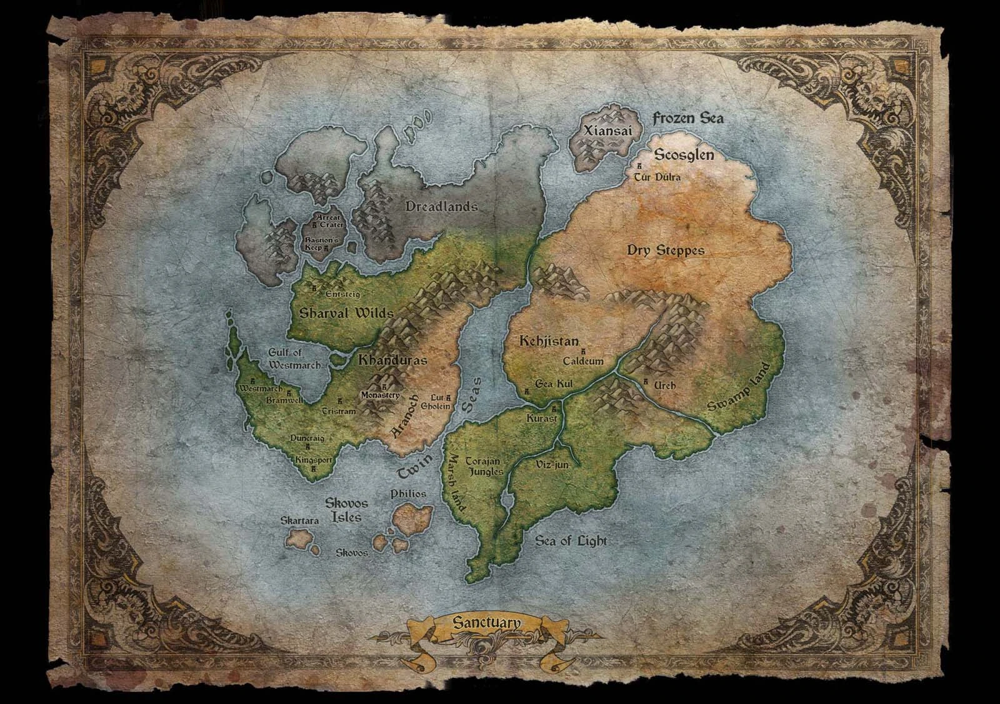
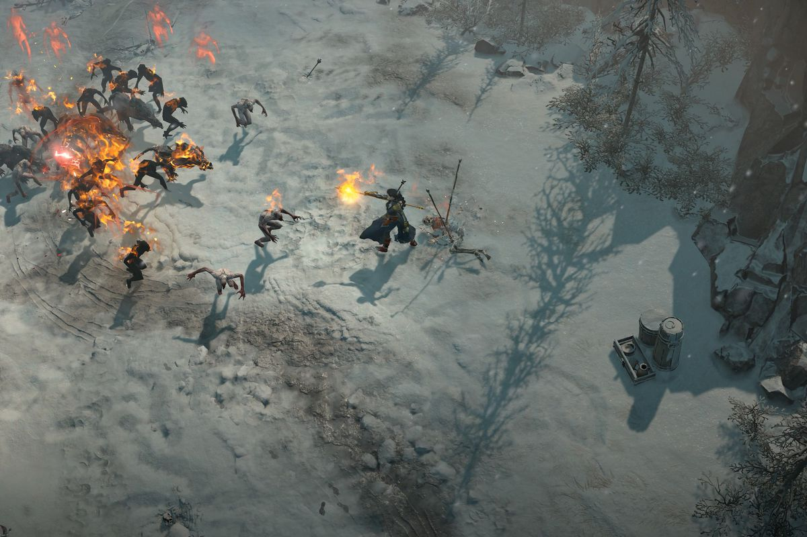
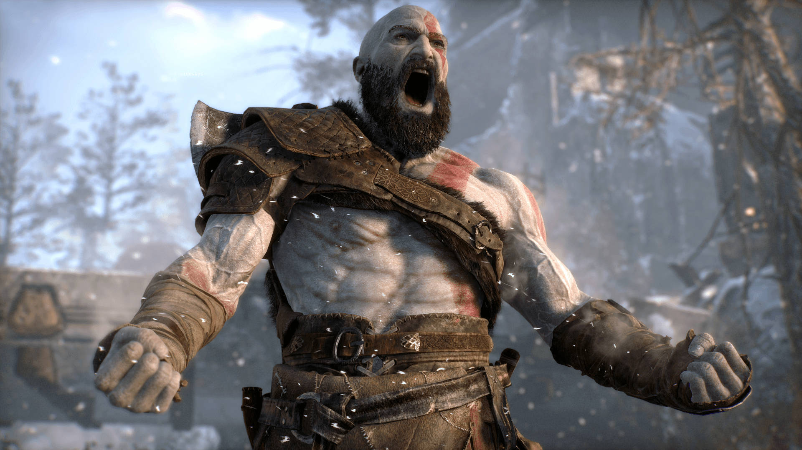

Go Back To: SiteName.com
The Return to Darkness
Like seeing your favorite band play their greatest hit live, Diablo 4 is completely awesome to behold even though you know exactly how the song’s going to go from the moment you hear the first iconic note. Diablo 4 doesn’t do much to reinvent ARPGs or push the boundaries of a genre its series helped pioneer, but the tweaks, improvements, and borrowed ideas it does introduce have forged this latest model into the best Diablo we’ve ever had. The finely-tuned combat, extensive build options across each class, stellar graphics, and strong live-service foundation are all among the most impressive in the genre, and the endgame activities and grind are so well thought out that I struggle to find any fault in them – as rare an occurrence as rainfall on Mars. A weak story and some irritating bugs do occasionally throw a wet blanket over the fires of Hell, but the 80 hours I’ve spent in Sanctuary have still been overwhelmingly positive, and even after all that demon slaying and obsessing over loot rolls, I’m still very excited to play a whole lot more.
Diablo 4 is the latest in a demon-centric series quickly approaching its 30th birthday, and it largely succeeds at modernizing the depths of Hell enough to finally match its more recent ARPG peers. You’re once again sent on an endless string of dungeon crawls where mastering your hotkey-bound abilities, optimizing your DPS, and improving your survivability are generally more important than things like an engaging story or explaining the insane diarrhea of flickering lights and elemental effects that typically occupy the screen – and practically every moment of that is really, really enjoyable whether you’re playing alone or with up to three friends.
If you were hoping Diablo 4 would shock the ARPG world with massive innovations to the genre, however, you’re likely to be disappointed in that specific regard. Instead of trying to revolutionize ARPGs in any major way, Blizzard mostly seems content to play it safe by making smart but unsurprising changes to the formula, with things like more customizable skill trees and more diverse playstyles between its iconic character classes.
Sanctuary is as great as the music that accompanies it.
But before you get any real payoff for what’s expertly set up in the first act, you’ll spend the vast majority of the next four going on tangentially related errands with more filler than a packing peanut factory, before finally getting back to the task at hand. The result is an interesting but disjointed story with a payoff that doesn’t quite stick the landing. The real shame is that anytime Lilith is on-screen or closely involved in whatever action is going on, it’s absolutely engrossing stuff. But she’s largely hidden behind a curtain waiting for the final act for the vast majority of the campaign, and the diversions you’re sent on along the way consistently feel like unnecessary detours. Combine that with some seriously disappointing boss fights I won’t spoil, especially the campaign’s final one, and it’s hard not to feel let down by what this could have been.
 It does help that Diablo 4 looks and sounds fantastic regardless of what’s going on in the story. Between the rare but breathtaking CGI cutscenes and the more numerous in-engine cutscenes that happen in between major story missions, as well as the detailed, disgustingly corrupted environments found in dungeons and out in the world, Sanctuary is rarely not a gorgeous sight to behold. It’s no small feat, then, that Diablo 4 sounds even better than it looks, with one of the most memorable OSTs in recent memory, mostly great voice acting, and lots of gross demon roars and shrieks as you lay waste to the minions of Hell.

Buildcrafting feels Unique
Part of what helps make each option feel unique are the class mechanics that unlock at various points in the campaign. For example, the Sorceress gains access to the enchantment system in Act I, which allows you to enchant a couple of their spells to augment how they work. I used one of my enchantments on my teleport spell to turn the standard dodge every class gets into a second teleport cooldown, greatly improving my mobility. Each class has their own unique twist, whether it’s augmenting your ranks of the dead as a necromancer or bonding with spirit animals to gain beastly enhancements as a druid, and that goes a long way to making your playthrough and buildcrafting on each character feel distinct in some really cool ways.
The Art Of War
And there are battles aplenty. Though Kratos only kills for survival now, he still does so with a flair for brutality. The stun-kill animations can be especially gory and literally bone-crunching affairs. (Though, because there’s only one per enemy type, they become somewhat repetitive to watch.) While God of War is altogether more emotionally complex and layered, its excellent combat undoubtedly carries forward the blood-soaked traditions of the series. Kratos’ signature weapon this time out is the Leviathan Axe, which is one of the best weapons I’ve used in any recent game. It begins with a simple light and heavy attack but can be upgraded and given new abilities throughout your journey. It’s a lot of fun to chop and slice through hordes of foes with, but I’ve rarely enjoyed a weapon more than when the axe is flying through the air.
~A Whole New Terrain~
God of War’s initially linear world opens up a bit after the first few hours, and it encourages exploration through its many rewards and collectibles for completing optional puzzles and fights. But you can occasionally stumble into the path of a much more difficult opponent, clearly denoted by the purple color of their health bar, and they can often take you down in one or two hits. If I felt hungry for a challenge, God of War never let me down.
There’s plenty of freedom, although the map never becomes truly “open world” in the way that games like The Legend of Zelda: Breath of the Wild or Horizon Zero Dawn are; instead, it’s an interconnected series of diverse locations, many of which are gated behind certain story moments and collectible milestones until the very end.
Verdict
I expected great action from God of War, and it delivers that handily. But I didn’t expect it to be a thrilling journey in which every aspect of it complements the others to form what is nothing short of a masterpiece. It’s a game in which Kratos, a previously one-note character, becomes a complex father, warrior, and monster, embattled both on the field and within his own heart about how to treat his son; one in which the world opens up and shifts, offering rewards in both gameplay and knowledge of its lore that I treasured with each accomplishment.